Question: where do groups of cells sit on the embedding, and where is a gene or score high?
| Function | Use |
|---|---|
DimPlot_bioToolkit() |
cells coloured by a group (cell type, cluster, condition) |
FeaturePlot_bioToolkit() |
cells coloured by a value (gene, QC metric, module score) |
transform_embedding() |
flip or rotate an embedding to a conventional orientation |
format_sc_plots(), manipulate_sc_plot(),
add_dimension_arrows()
|
restyle plots made by Seurat, scCustomize, SCpubr … |
Both plot functions keep Seurat’s arguments (group.by,
split.by, features, reduction,
cells, cols, pt.size,
label) and draw panels of a fixed size, with dimension
arrows in place of axes.
Data: 8,000 PBMCs from Kang et al. 2018, 8 donors, control or interferon-β (IFN-β) for 6 h; log-normalized, Harmony integration over condition, UMAP; the authors’ cell type labels.
pbmc <- docs_kang()
pbmc
#> An object of class Seurat
#> 11428 features across 8000 samples within 1 assay
#> Active assay: RNA (11428 features, 2000 variable features)
#> 2 layers present: counts, data
#> 4 dimensional reductions calculated: pca, umap.unintegrated, harmony, umap
head(pbmc[[]], 3)
#> orig.ident nCount_RNA nFeature_RNA donor condition
#> AAACATACCATGCA-1 Kang2018 703 337 D1488 Control
#> AAACATACGCCAAT-1 Kang2018 1140 434 D1016 Control
#> AAACATACGCTTCC-1 Kang2018 817 427 D1256 Control
#> sample cell_type
#> AAACATACCATGCA-1 D1488_Control CD4 T
#> AAACATACGCCAAT-1 D1016_Control CD14 Mono
#> AAACATACGCTTCC-1 D1256_Control CD4 TCells by group
DimPlot_bioToolkit(pbmc, group.by = "cell_type", label = TRUE)
Variants
One panel per level of a second variable; all panels share one legend and one size.
DimPlot_bioToolkit(
pbmc,
group.by = "cell_type",
split.by = "condition",
panel.width = 3
)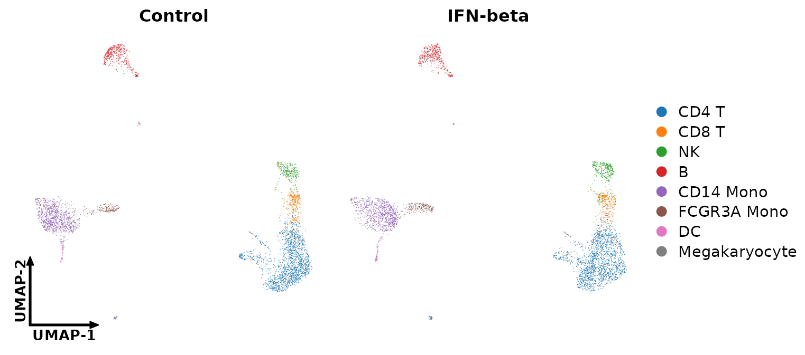
Colour some cells and draw the rest in grey, e.g. one cell type:
mono <- colnames(pbmc)[pbmc$cell_type %in% c("CD14 Mono", "FCGR3A Mono")]
DimPlot_bioToolkit(pbmc, group.by = "cell_type", cells.highlight = mono)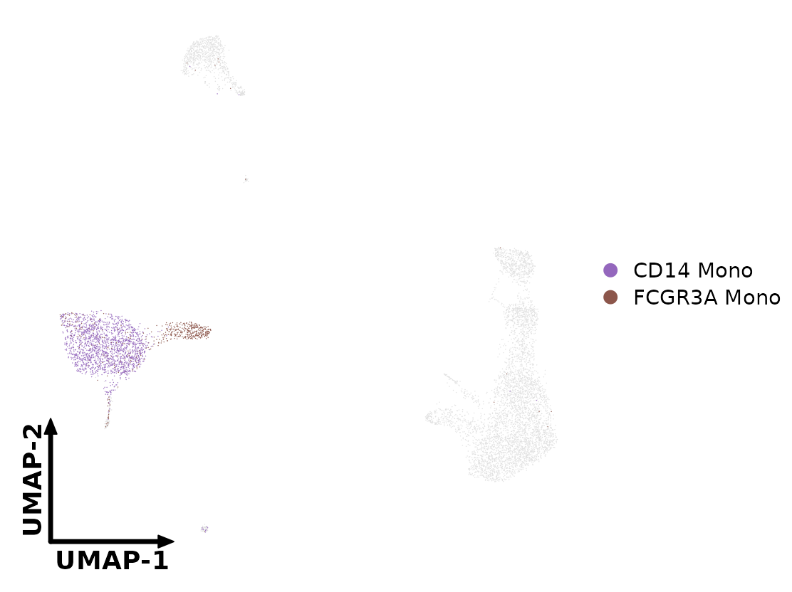
Plot a subset only. full.extent = TRUE keeps the axes of
the whole object, so that the subset lines up with the full plot:
DimPlot_bioToolkit(
pbmc,
group.by = "cell_type",
cells = mono,
full.extent = TRUE
)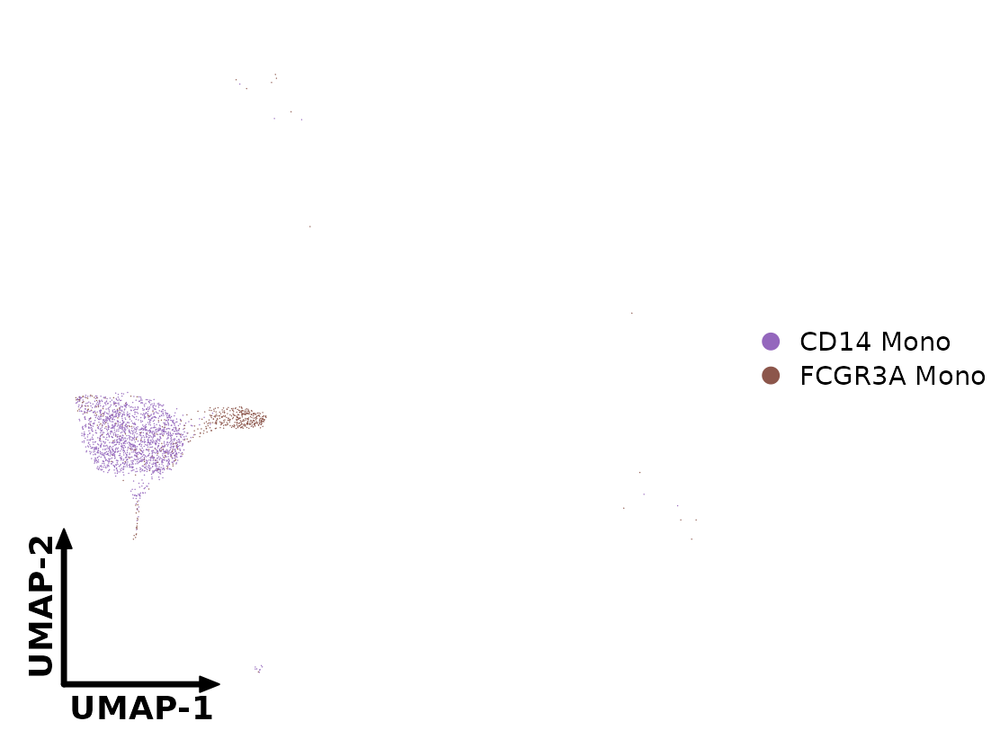
An outline around the cell clouds;
outline.color = "darken" uses a darker shade of each
group’s colour.
DimPlot_bioToolkit(pbmc, group.by = "cell_type", outline = TRUE)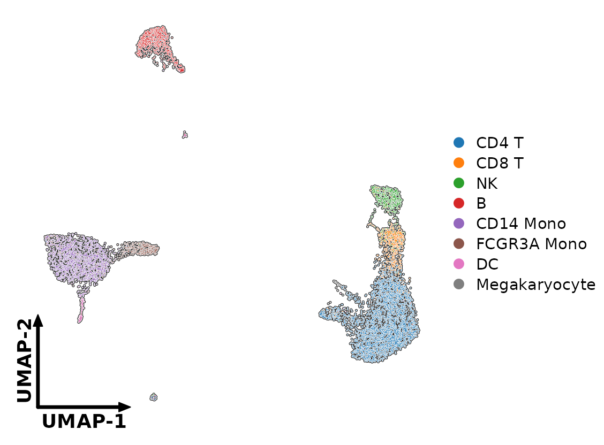
Colour by a fine annotation and outline a broader one
(mark.by) with a dashed line around each cloud. Cells with
no mark.by group (here the few, scattered megakaryocytes)
are not outlined:
lineage <- c(
"CD4 T" = "Lymphoid",
"CD8 T" = "Lymphoid",
"NK" = "Lymphoid",
"B" = "Lymphoid",
"CD14 Mono" = "Myeloid",
"FCGR3A Mono" = "Myeloid",
"DC" = "Myeloid",
"Megakaryocyte" = NA
)
pbmc$lineage <- factor(
unname(lineage[as.character(pbmc$cell_type)]),
levels = c("Lymphoid", "Myeloid")
)
DimPlot_bioToolkit(
pbmc,
group.by = "cell_type",
mark = TRUE,
mark.by = "lineage",
mark.cols = c("grey30", "#B5338A")
)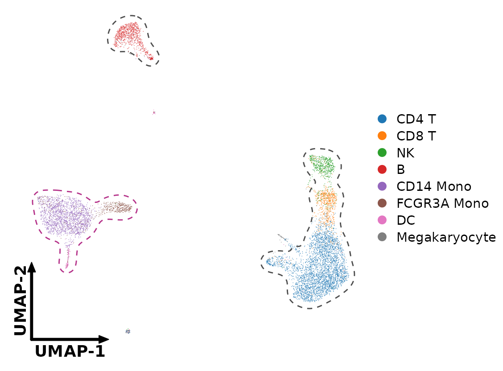
legend.position takes “right”, “left”, “top”, “bottom”,
“inside” (in the empty corner of the panel) or “none”.
DimPlot_bioToolkit(
pbmc,
group.by = "condition",
legend.position = "inside",
cols = c("grey60", "#B5338A")
)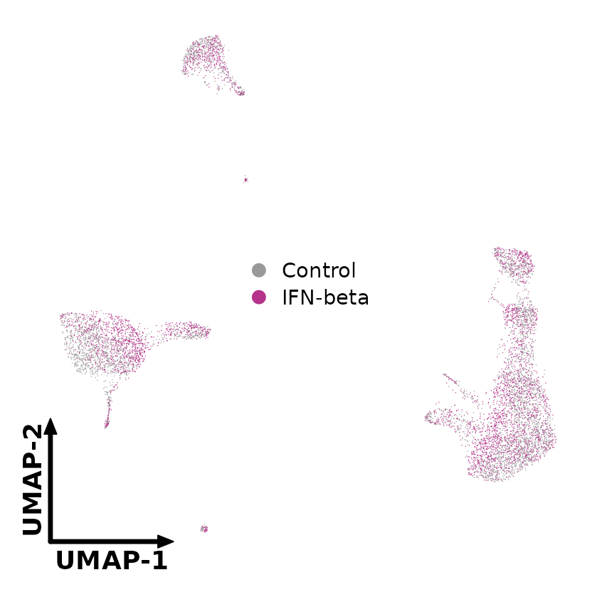
Integration and the embedding
The default reduction is “umap”. This object also holds
the UMAP computed before integration: stimulated and control cells were
captured separately and IFN-β changes the expression of every cell type,
so without integration the two conditions form separate clouds. Any
reduction of the object can be plotted:
DimPlot_bioToolkit(
pbmc,
group.by = "condition",
reduction = "umap.unintegrated",
cols = c("grey60", "#B5338A")
)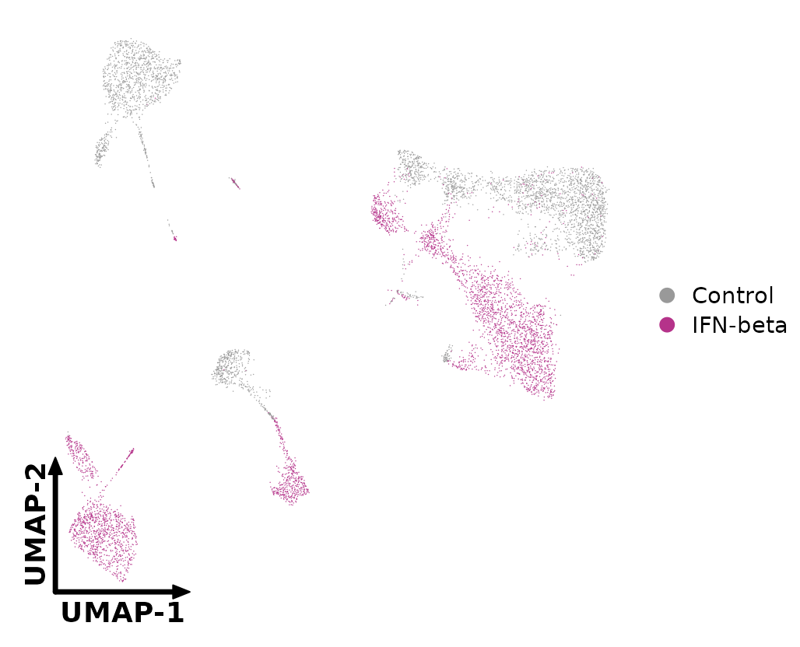
Where the arrows go
With several panels, the dimension arrows are drawn once, in the
bottom left panel, by default. arrow.panels puts them in
every panel, or in the panels along one edge of the grid:
"left" / "right" (the first / last panel of
each row) and "top" / "bottom" (the top /
lowest panel of each column). In a grid whose last row is incomplete, a
panel with nothing below it is on the bottom edge. The same argument
works in FeaturePlot_bioToolkit(),
DensityDiffPlot_bioToolkit() and
format_sc_plots().
DimPlot_bioToolkit(
pbmc,
group.by = "cell_type",
split.by = "donor",
ncol = 3,
panel.width = 1.6,
legend.position = "none"
)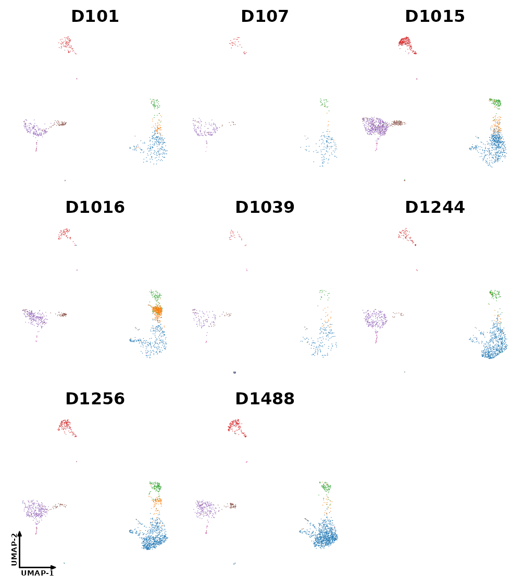
DimPlot_bioToolkit(
pbmc,
group.by = "cell_type",
split.by = "donor",
ncol = 3,
panel.width = 1.6,
legend.position = "none",
arrow.panels = "left"
)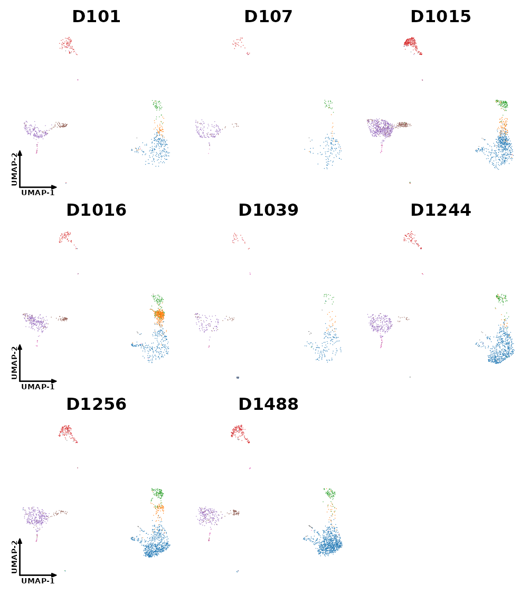
DimPlot_bioToolkit(
pbmc,
group.by = "cell_type",
split.by = "donor",
ncol = 3,
panel.width = 1.6,
legend.position = "none",
arrow.panels = "bottom"
)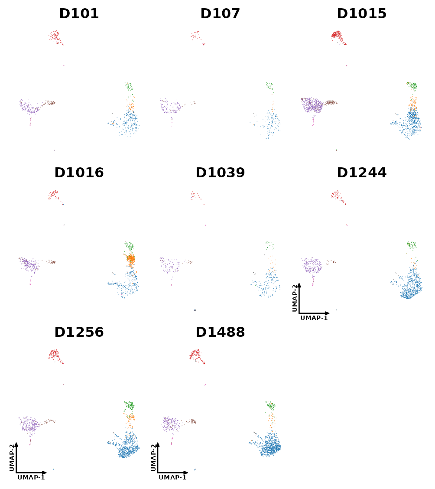
DimPlot_bioToolkit(
pbmc,
group.by = "cell_type",
split.by = "donor",
ncol = 3,
panel.width = 1.6,
legend.position = "none",
arrow.panels = "all"
)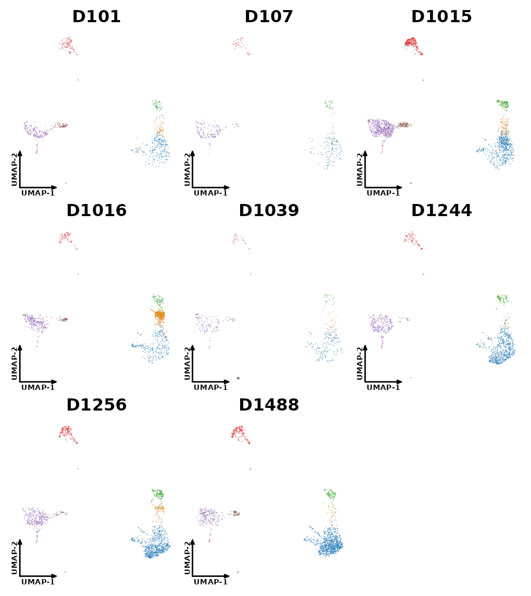
Arrow size
The arrows keep the same proportion to the panel at any size: 2 cm
long on a 3.5-inch panel, and scaled with the panel’s shorter side,
labels included. Small panels get small arrows that stay clear of the
cells near the edges, large panels larger ones. arrow.scale
makes them larger or smaller at any panel size (default 1); it works in
every function that draws the arrows.
DimPlot_bioToolkit(
pbmc,
group.by = "cell_type",
split.by = "condition",
panel.width = 2,
legend.position = "none",
arrow.scale = 1.3
)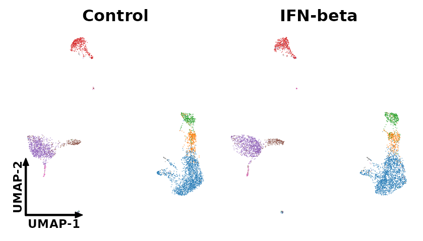
Genes and scores
FeaturePlot_bioToolkit(
pbmc,
features = c("CD3E", "MS4A1", "CD14", "FCGR3A"),
ncol = 2,
panel.width = 2.5
)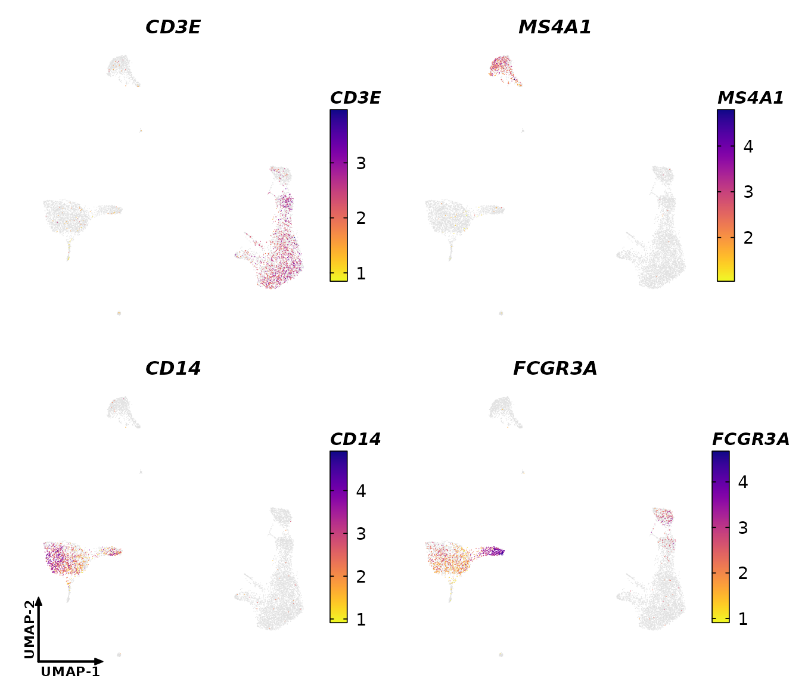
Cells with no expression (0) are drawn in grey, apart from the colour
scale, so that “not detected” is not confused with “low”
(na.cutoff = "auto"). Gene names are set in italics.
Variants
One gene across conditions, on one shared scale
(keep.scale = "feature"): ISG15, an
interferon-stimulated gene, is induced in every cell type.
FeaturePlot_bioToolkit(
pbmc,
features = "ISG15",
split.by = "condition",
panel.width = 3
)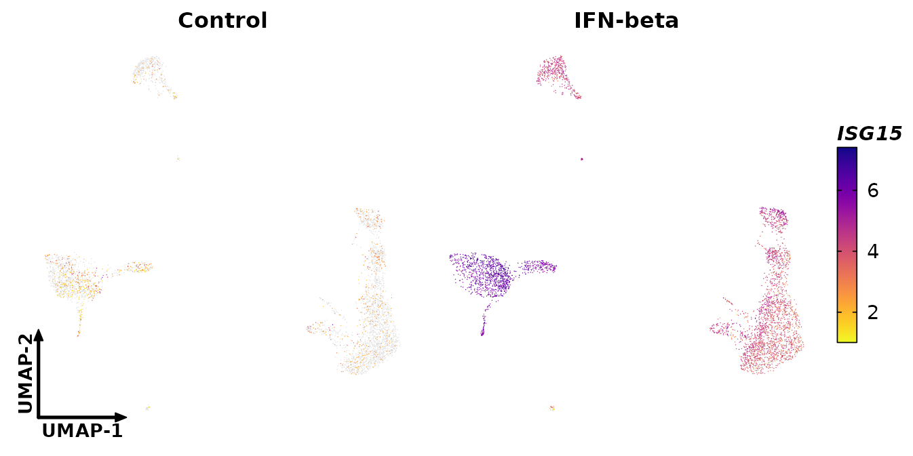
Scores centred on 0 get a diverging scale automatically
(diverging = "auto"): the centre colour stays at 0 and each
side reaches its full colour at its own extreme, so a score from -0.2 to
1.5 is not faded on the negative side. Here, Seurat’s
AddModuleScore() on the MSigDB Hallmark interferon-α
response genes (IFN-α and IFN-β signal through the same receptor and
induce the same genes):
hallmark <- msigdbr::msigdbr(species = "Homo sapiens", collection = "H")
is_ifn <- hallmark$gs_name == "HALLMARK_INTERFERON_ALPHA_RESPONSE"
ifn_genes <- intersect(hallmark$gene_symbol[is_ifn], rownames(pbmc))
pbmc <- Seurat::AddModuleScore(
pbmc,
features = list(ifn_genes),
name = "IFN_alpha_score",
seed = 1
)
FeaturePlot_bioToolkit(
pbmc,
features = "IFN_alpha_score1",
split.by = "condition",
panel.width = 3,
legend.title = "IFN-α\nresponse"
)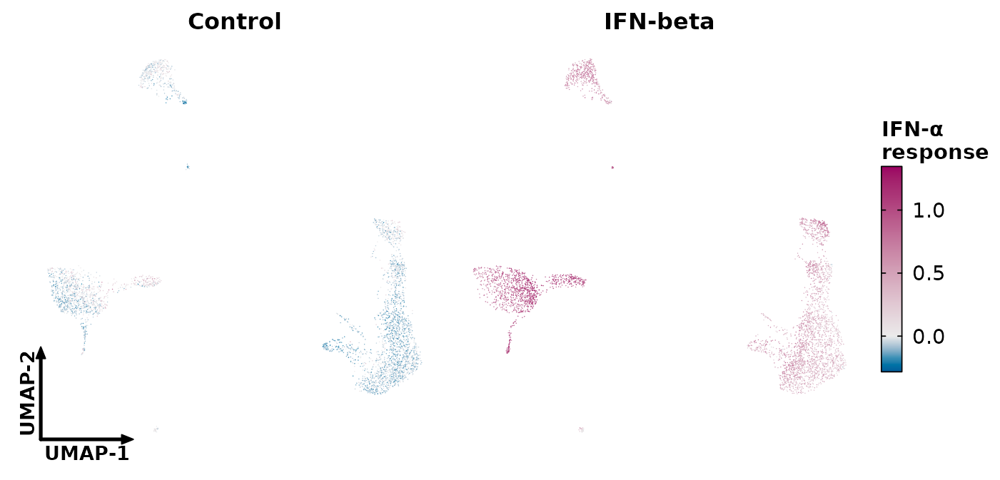
Any metadata column, e.g. a QC metric; max.cutoff caps
the scale at a quantile so that a few extreme cells do not compress
it:
FeaturePlot_bioToolkit(
pbmc,
features = "nCount_RNA",
max.cutoff = "q99",
cols = "viridis"
)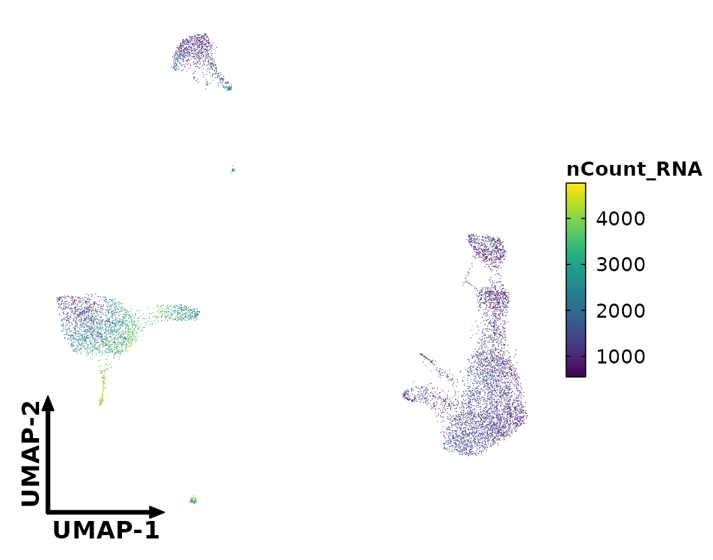
Label groups (active identities, or label.by) on top of
the values:
FeaturePlot_bioToolkit(
pbmc,
features = "CD14",
label = TRUE,
label.by = "cell_type"
)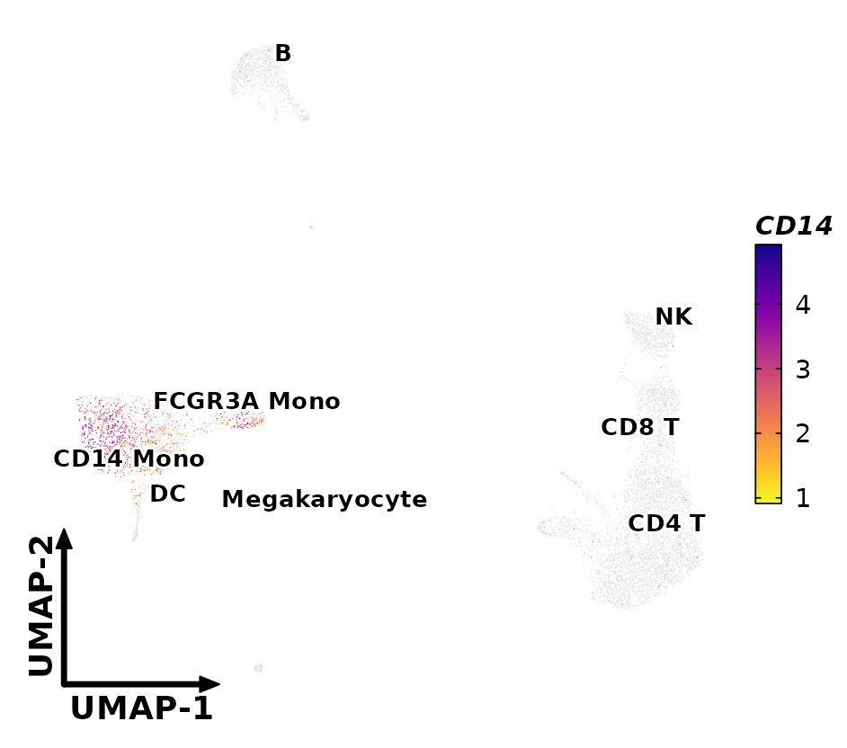
Sparse genes: geom
Most cells have zero counts for many genes, even where the gene is expressed (dropout). Three ways to draw them, here for the chemokine CXCL10, induced by interferon in monocytes:
Every cell coloured by its own value (default).
cxcl10 <- colnames(pbmc)[pbmc$condition == "IFN-beta"]
FeaturePlot_bioToolkit(
pbmc,
features = "CXCL10",
cells = cxcl10,
panel.width = 3
)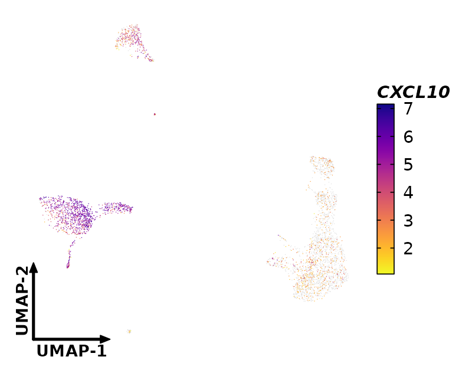
Cells binned into hexagons. hex.fun = "mean" colours by
the mean value in a tile (zeros included); hex.fun = "pct"
by the % of cells expressing it.
FeaturePlot_bioToolkit(
pbmc,
features = "CXCL10",
cells = cxcl10,
geom = "hex",
hex.fun = "pct",
panel.width = 3
)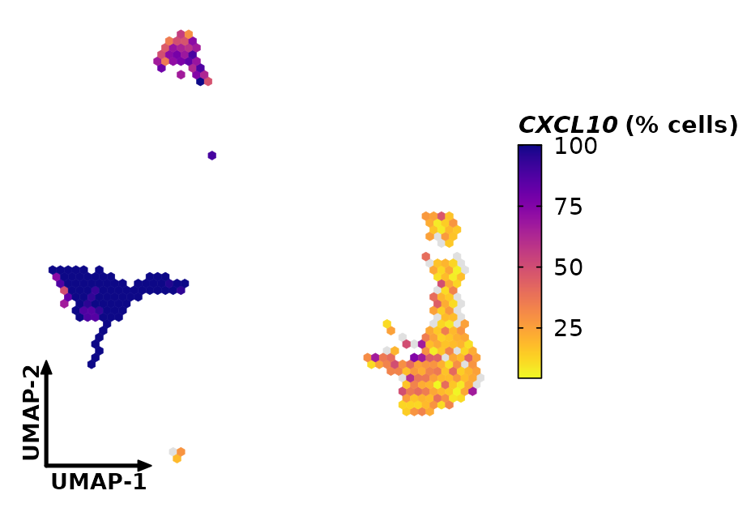
Values smoothed over neighbouring cells.
density.method = "smooth" (a kernel-weighted mean, in the
units of the feature); "wkde" is the weighted kernel
density of the Nebulosa package, scaled to a maximum of 1.
FeaturePlot_bioToolkit(
pbmc,
features = "CXCL10",
cells = cxcl10,
geom = "density",
panel.width = 3
)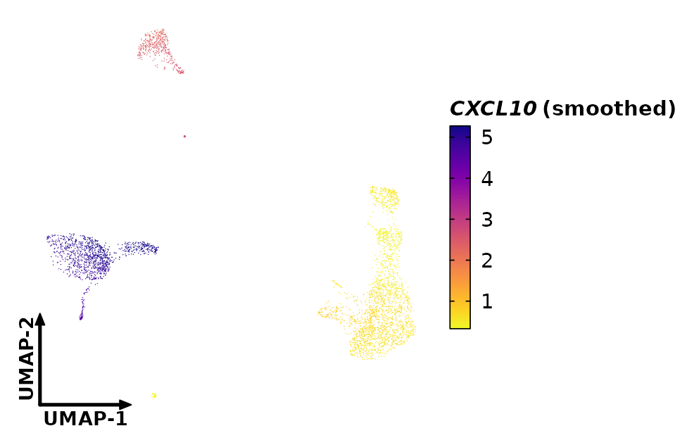
Orienting an embedding
UMAP coordinates have no meaningful direction.
transform_embedding() flips and / or rotates
(rotate, in degrees) a 2-D reduction in the object, for
display only (distances are unchanged), e.g. to keep the orientation of
a published figure:
pbmc_t <- transform_embedding(pbmc, reduction = "umap", flip_vertical = TRUE)
DimPlot_bioToolkit(
pbmc_t,
group.by = "cell_type",
label = TRUE,
panel.width = 3
)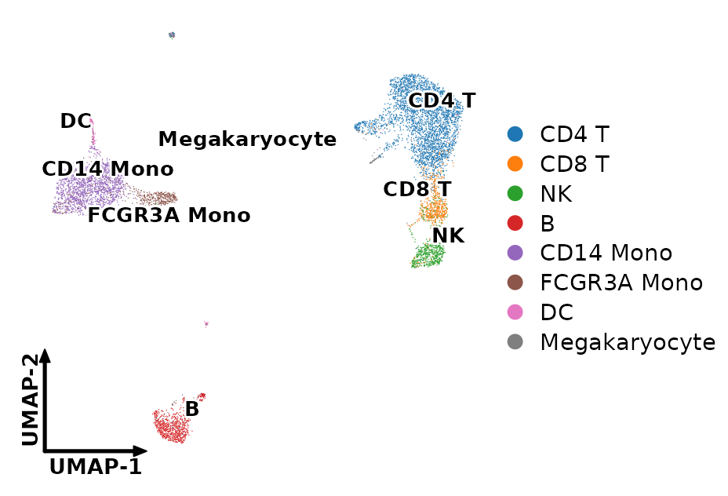
Restyling plots made by Seurat
format_sc_plots() applies the same look to plots made by
other packages: axes replaced by dimension arrows (by default on the
bottom left plot only; arrow.panels as above), legends
removed or moved, and the plots arranged in a grid. It also takes plots
made separately with DimPlot_bioToolkit() or
FeaturePlot_bioToolkit(): the arrows they have are
replaced, so that each plot keeps at most one set.
seurat_plots <- list(
Seurat::DimPlot(pbmc, group.by = "cell_type", reduction = "umap"),
Seurat::FeaturePlot(pbmc, features = "ISG15", reduction = "umap")
)
format_sc_plots(seurat_plots, ncol = 2)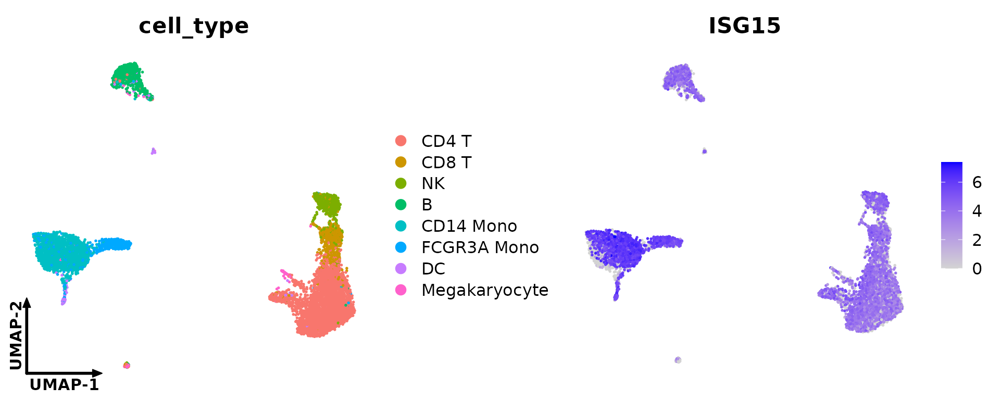
own_plots <- list(
DimPlot_bioToolkit(pbmc, group.by = "cell_type", panel.width = 2.2),
FeaturePlot_bioToolkit(pbmc, features = "ISG15", panel.width = 2.2)
)
format_sc_plots(own_plots, ncol = 2, arrow.panels = "all")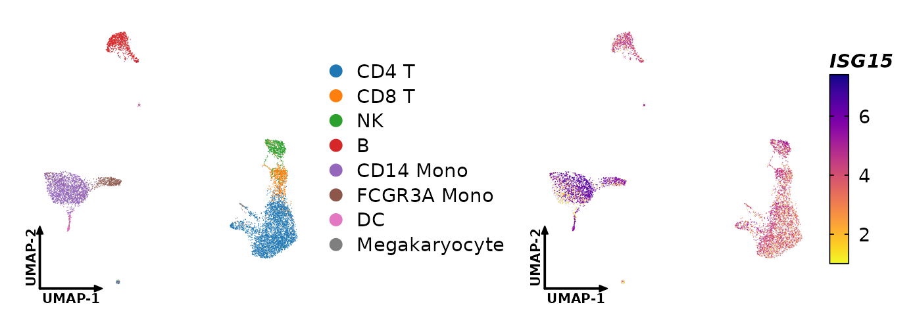
For a single plot, add_dimension_arrows() adds the
arrows and manipulate_sc_plot() changes its axes, legend or
grid:
p <- Seurat::DimPlot(pbmc, group.by = "condition", reduction = "umap")
p <- manipulate_sc_plot(p, remove.grid = TRUE, legend.title = "Condition")
add_dimension_arrows(p, reduction = "umap", arrow.scale = 0.8)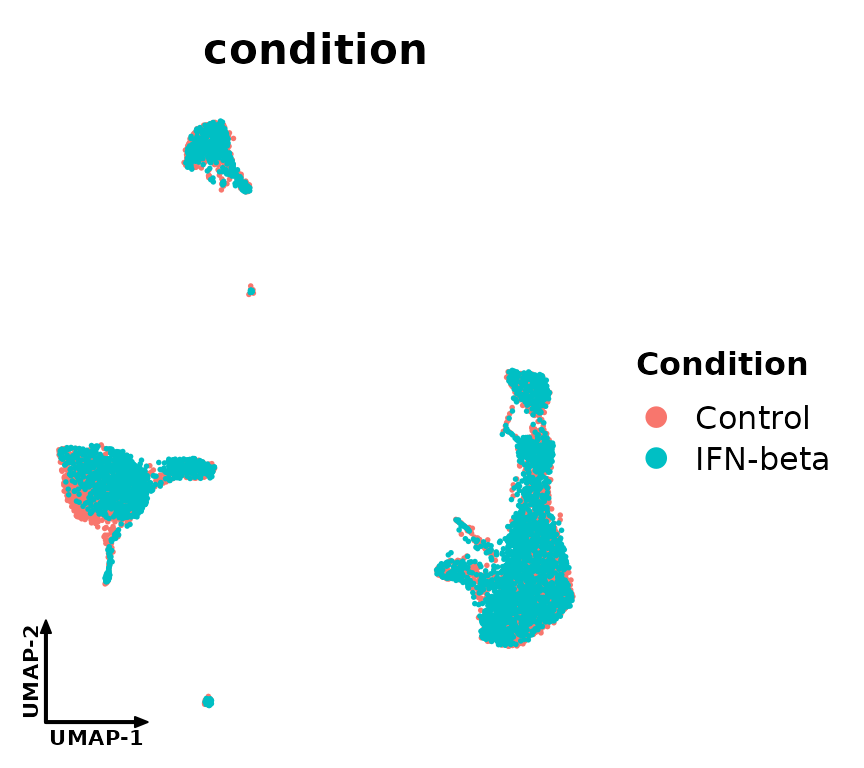
Plots made by Seurat have no fixed panel size, so give
save_plot() a width and height in
inches; the arrows are scaled with the panel size they are drawn at.
Arguments of these three functions were renamed to dot.case in 0.10.0;
add.arrow and bottom.left.only of
format_sc_plots() were replaced by
arrow.panels in 1.0.0. The old names still work, with a
deprecation warning.